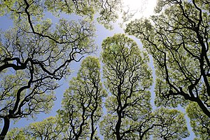

from wikipedia, the free encyclopedia
For the album by Trash Boat, see Crown Shyness (album).
Crown shyness(also canopy disengagement,[1] canopy shyness, [2] or inter-crown spacing[3]) is a phenomenon observed in some tree species, in which the crowns of fully stocked trees do not touch each other, forming a canopy with channel-like gaps.[4][5]. The phenomenon is most prevalent among trees of the same species, but also occurs between trees of different species.[6][7] There exist many hypotheses as to why crown shyness is an adaptive behavior, and research suggests that it might inhibit spread of leaf-eating insect larvae.[8]
The exact physiological basis of crown shyness is uncertain. [6]The phenomenon has been discussed in scientific literature since the 1920s.[9] The variety of hypotheses and experimental results might suggest that there are multiple mechanisms across different species, an example of convergent evolution. [citation needed]
Some hypotheses contend that the interdigitation of canopy branches leads to "reciprocal pruning" of adjacent trees: trees in windy areas suffer physical damage as they collide with each other during winds; the abrasions and collisions induce a crown shyness response. Studies suggest that lateral branch growth is largely uninfluenced by neighbours until disturbed by mechanical abrasion. [10] If the crowns are artificially prevented from colliding in the winds, they gradually fill the canopy gaps. [11] This explains instances of crown shyness between branches of the same organism.Proponents of this idea cite that shyness is particularly seen in conditions conducive to this pruning, including windy forests, stands of flexible trees, and early succession forests where branches are flexible and limited in lateral movement.[6][12] According to this theory, variable flexibility in lateral branchesgreatly influences the degree of crown shyness.
Similarly, some research suggests that constant abrasion at growth nodules disrupts bud tissue such that it is unable to continue with lateral growth. Australian forester M.R. Jacobs, who studied the crown shyness patterns in eucalyptus in 1955, believed that the trees' growing tips were sensitive to abrasion, resulting in canopy gaps.[13] Miguel Franco (1986) observed that the branches of Picea sitchensis (Sitka spruce) and Larix kaempferi (Japanese larch) suffered physical damage due to abrasion, which killed the leading shoots.[14][15]
A prominent hypothesis is that canopy shyness has to do with mutual light sensing by adjacent plants. The photoreceptor-mediated shade avoidance response is a well-documented behavior in a variety of plant species.[16] Neighbor detection is thought to be a function of several unique photoreceptors. Plants can sense the proximity of neighbors by sensing backscattered far-red light, a task widely thought to be accomplished by the activity of the phytochrome photoreceptors.[17] Many species of plant respond to an increase in far-red light (and, by extension, encroaching neighbors) by directing growth away from the far-red stimulus and by increasing the rate of elongation.[18] Similarly, plants use blue light to induce the shade-avoidance response, likely playing a role in the recognition of neighboring plants,[19] though this was just starting to be recognised in 1988. [20]
The characterization of these behaviors might suggest that crown shyness is simply the result of mutual shading based on well-understood shade avoidance responses.[6][21] Malaysian scholar Francis S.P. Ng, who studied Dryobalanops aromatica, suggested that the growing tips were sensitive to light levels and stopped growing when nearing the adjacent foliage due to the induced shade.[6][21]
A 2015 study has suggested that Arabidopsis thaliana shows different leaf placement strategies when grown amongst kin and unrelated conspecifics, shading dissimilar neighbors and avoiding kin. This response was shown to be contingent on the proper functioning of multiple photosensory modalities.[22] A 1998 study proposed similar systems of photoreceptor-mediated inhibition of growth as explanations of crown shyness,[6][21] though a causal link between photoreceptors and crown asymmetry had yet to be experimentally proven. This might explain instances of intercrown spacing that are only exhibited between conspecifics.[6][7]